Simphony circuit simulator
Contents
Simphony circuit simulator#
Simphony is a circuit simulator based on scikit-rf
The main advantage of simphony over SAX is that simphony works in Windows, Linux and MacOs. While SAX only works on MacOs and Linux.
It also supports the SiEPIC PDK library natively.
Component models#
You can use component models from :
Sparameters from Lumerical FDTD simulations thanks to the gdsfactory Lumerical plugin
SiPANN open source package
[1]:
import numpy as np
import matplotlib.pyplot as plt
import gdsfactory as gf
import gdsfactory.simulation.simphony as gs
import gdsfactory.simulation.simphony.components as gc
2022-06-30 06:16:45.663 | INFO | gdsfactory.config:<module>:52 - Load '/home/runner/work/gdsfactory/gdsfactory/gdsfactory' 5.12.4
2022-06-30 06:16:47.093850: W tensorflow/stream_executor/platform/default/dso_loader.cc:64] Could not load dynamic library 'libcudart.so.11.0'; dlerror: libcudart.so.11.0: cannot open shared object file: No such file or directory
2022-06-30 06:16:47.093897: I tensorflow/stream_executor/cuda/cudart_stub.cc:29] Ignore above cudart dlerror if you do not have a GPU set up on your machine.
INFO:tensorflow:Restoring parameters from /usr/share/miniconda/envs/anaconda-client-env/lib/python3.9/site-packages/SiPANN/ANN/TIGHT_ANGLE_GAP/model
2022-06-30 06:16:49.385605: W tensorflow/stream_executor/platform/default/dso_loader.cc:64] Could not load dynamic library 'libcuda.so.1'; dlerror: libcuda.so.1: cannot open shared object file: No such file or directory
2022-06-30 06:16:49.385644: W tensorflow/stream_executor/cuda/cuda_driver.cc:269] failed call to cuInit: UNKNOWN ERROR (303)
2022-06-30 06:16:49.385667: I tensorflow/stream_executor/cuda/cuda_diagnostics.cc:156] kernel driver does not appear to be running on this host (fv-az204-569): /proc/driver/nvidia/version does not exist
2022-06-30 06:16:49.386088: I tensorflow/core/platform/cpu_feature_guard.cc:193] This TensorFlow binary is optimized with oneAPI Deep Neural Network Library (oneDNN) to use the following CPU instructions in performance-critical operations: AVX2 AVX512F FMA
To enable them in other operations, rebuild TensorFlow with the appropriate compiler flags.
2022-06-30 06:16:49.548872: I tensorflow/compiler/mlir/mlir_graph_optimization_pass.cc:354] MLIR V1 optimization pass is not enabled
INFO:tensorflow:Restoring parameters from /usr/share/miniconda/envs/anaconda-client-env/lib/python3.9/site-packages/SiPANN/ANN/TIGHT_ANGLE_STRAIGHT/model
INFO:tensorflow:Restoring parameters from /usr/share/miniconda/envs/anaconda-client-env/lib/python3.9/site-packages/SiPANN/ANN/TIGHT_ANGLE_BENT_RAND/model
[2]:
c = gf.components.mzi()
n = c.get_netlist()
[3]:
c

[3]:
mzi: uid 2, ports ['o1', 'o2'], aliases [], 0 polygons, 20 references
[4]:
c.plot_netlist()
[4]:
<networkx.classes.graph.Graph at 0x7f05c49a5070>
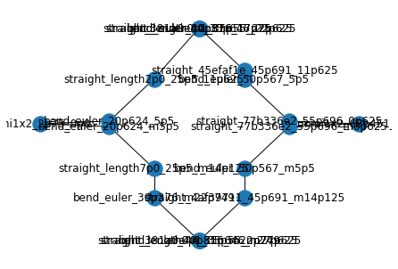
Straight#
Lets start with the Sparameter model of a straight waveguide.
The models are for lossless elements.
[5]:
m = gc.straight()
wavelengths = np.linspace(1500, 1600, 128) * 1e-9
gs.plot_model(m, logscale=False, wavelengths=wavelengths)
2022-06-30 06:16:51.077 | INFO | gdsfactory.simulation.simphony.components.straight:straight:23 - ignoring dict_keys([])

[5]:
<AxesSubplot:xlabel='wavelength (nm)', ylabel='|S|'>
[6]:
m = gc.straight()
wavelengths = np.linspace(1500, 1600, 128) * 1e-9
gs.plot_model(m, phase=True, wavelengths=wavelengths)
2022-06-30 06:16:51.200 | INFO | gdsfactory.simulation.simphony.components.straight:straight:23 - ignoring dict_keys([])
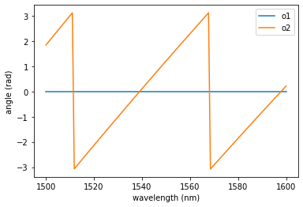
[6]:
<AxesSubplot:xlabel='wavelength (nm)', ylabel='angle (rad)'>
Bend#
[7]:
m = gc.bend_circular(radius=2) # this bend should have some loss
gs.plot_model(m, logscale=False, wavelengths=wavelengths)

[7]:
<AxesSubplot:xlabel='wavelength (nm)', ylabel='|S|'>
[8]:
m = gc.mmi1x2() # this model comes from Lumerical FDTD 3D sims
gs.plot_model(m, pin_in="o1")
2022-06-30 06:16:51.456 | INFO | gdsfactory.simulation.lumerical.read:read_sparameters_lumerical:130 - Sparameters loaded from /home/runner/work/gdsfactory/gdsfactory/gdslib/sp/mmi1x2_eaca167b.dat
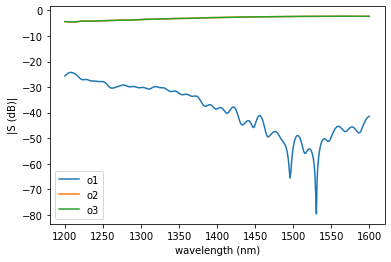
[8]:
<AxesSubplot:xlabel='wavelength (nm)', ylabel='|S (dB)|'>
[9]:
m = gc.mmi1x2() # this model comes from Lumerical FDTD 3D sims
gs.plot_model(m, pin_in="o1", pins=["o2", "o3"])
2022-06-30 06:16:51.629 | INFO | gdsfactory.simulation.lumerical.read:read_sparameters_lumerical:130 - Sparameters loaded from /home/runner/work/gdsfactory/gdsfactory/gdslib/sp/mmi1x2_eaca167b.dat
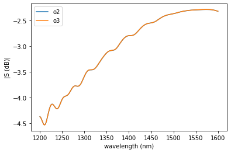
[9]:
<AxesSubplot:xlabel='wavelength (nm)', ylabel='|S (dB)|'>
[10]:
m = gc.mmi1x2()
gs.plot_model(m, pin_in="o1", phase=True)
2022-06-30 06:16:51.778 | INFO | gdsfactory.simulation.lumerical.read:read_sparameters_lumerical:130 - Sparameters loaded from /home/runner/work/gdsfactory/gdsfactory/gdslib/sp/mmi1x2_eaca167b.dat
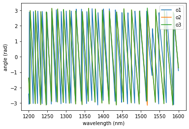
[10]:
<AxesSubplot:xlabel='wavelength (nm)', ylabel='angle (rad)'>
[11]:
m.pins
[11]:
[<simphony.pins.Pin at 0x7f05c4800040>,
<simphony.pins.Pin at 0x7f05c27671f0>,
<simphony.pins.Pin at 0x7f05c2799f40>]
[12]:
pin = m.pins[0]
As you can see the MMI has -20dB reflection and -3dB transmission
[13]:
gs.plot_model(m, pins=("o2", "o3"))

[13]:
<AxesSubplot:xlabel='wavelength (nm)', ylabel='|S (dB)|'>
[14]:
m = gc.mmi2x2() # this model comes from Lumerical FDTD 3D sims
gs.plot_model(m)
2022-06-30 06:16:52.115 | INFO | gdsfactory.simulation.lumerical.read:read_sparameters_lumerical:130 - Sparameters loaded from /home/runner/work/gdsfactory/gdsfactory/gdslib/sp/mmi2x2_eaca167b.dat
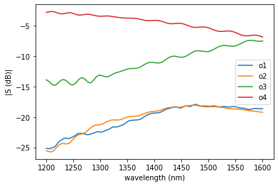
[14]:
<AxesSubplot:xlabel='wavelength (nm)', ylabel='|S (dB)|'>
[15]:
gs.plot_model(m, pins=("o3", "o4"))
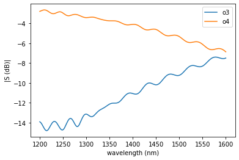
[15]:
<AxesSubplot:xlabel='wavelength (nm)', ylabel='|S (dB)|'>
[16]:
m = gc.coupler_ring()
gs.plot_model(m, logscale=False, wavelengths=wavelengths)
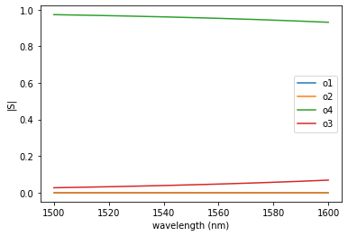
[16]:
<AxesSubplot:xlabel='wavelength (nm)', ylabel='|S|'>
[17]:
gc.coupler_ring?
[18]:
m = gc.coupler_ring(gap=0.3)
gs.plot_model(m, logscale=False, wavelengths=wavelengths)

[18]:
<AxesSubplot:xlabel='wavelength (nm)', ylabel='|S|'>
[19]:
m = gc.coupler(gap=0.3)
gs.plot_model(m, logscale=False, wavelengths=wavelengths)
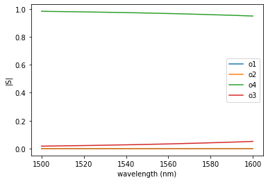
[19]:
<AxesSubplot:xlabel='wavelength (nm)', ylabel='|S|'>
[20]:
m = gc.gc1550te()
gs.plot_model(m, logscale=True, pin_in="port 1")
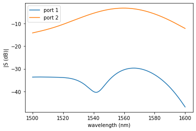
[20]:
<AxesSubplot:xlabel='wavelength (nm)', ylabel='|S (dB)|'>
[21]:
m = gc.gc1550te()
gs.plot_model(m, logscale=True, pin_in="port 1")

[21]:
<AxesSubplot:xlabel='wavelength (nm)', ylabel='|S (dB)|'>
[22]:
m = gc.gc1550te()
gs.plot_model(m, logscale=False, pin_in="port 1")
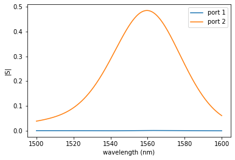
[22]:
<AxesSubplot:xlabel='wavelength (nm)', ylabel='|S|'>
Circuit simulations#
With Simphony you can also combine components into circuits
MZI interferometer#
[23]:
import matplotlib.pyplot as plt
import gdsfactory.simulation.simphony as gs
import gdsfactory.simulation.simphony.components as gc
import gdsfactory as gf
[24]:
c = gf.components.mzi(delta_length=10)
c
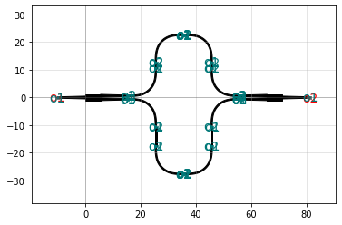
[24]:
mzi_delta_length10: uid 21, ports ['o1', 'o2'], aliases [], 0 polygons, 20 references
[25]:
c.plot_netlist()
[25]:
<networkx.classes.graph.Graph at 0x7f05c0555bb0>

[26]:
circuit = gs.components.mzi(delta_length=10, splitter=gs.components.mmi1x2)
gs.plot_circuit(
circuit,
start=1500e-9,
stop=1600e-9,
logscale=True,
)
2022-06-30 06:16:54.123 | INFO | gdsfactory.simulation.lumerical.read:read_sparameters_lumerical:130 - Sparameters loaded from /home/runner/work/gdsfactory/gdsfactory/gdslib/sp/mmi1x2_eaca167b.dat
2022-06-30 06:16:54.141 | INFO | gdsfactory.simulation.lumerical.read:read_sparameters_lumerical:130 - Sparameters loaded from /home/runner/work/gdsfactory/gdsfactory/gdslib/sp/mmi1x2_eaca167b.dat
2022-06-30 06:16:54.159 | INFO | gdsfactory.simulation.simphony.components.straight:straight:23 - ignoring dict_keys([])
2022-06-30 06:16:54.160 | INFO | gdsfactory.simulation.simphony.components.straight:straight:23 - ignoring dict_keys([])
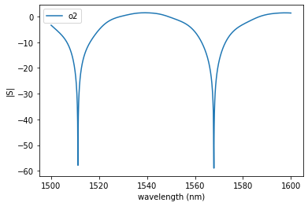
[26]:
<AxesSubplot:xlabel='wavelength (nm)', ylabel='|S|'>
[27]:
circuit = gs.components.mzi(delta_length=100, splitter=gs.components.mmi1x2)
gs.plot_circuit(
circuit,
start=1500e-9,
stop=1600e-9,
logscale=True,
)
2022-06-30 06:17:06.092 | INFO | gdsfactory.simulation.lumerical.read:read_sparameters_lumerical:130 - Sparameters loaded from /home/runner/work/gdsfactory/gdsfactory/gdslib/sp/mmi1x2_eaca167b.dat
2022-06-30 06:17:06.110 | INFO | gdsfactory.simulation.lumerical.read:read_sparameters_lumerical:130 - Sparameters loaded from /home/runner/work/gdsfactory/gdsfactory/gdslib/sp/mmi1x2_eaca167b.dat
2022-06-30 06:17:06.128 | INFO | gdsfactory.simulation.simphony.components.straight:straight:23 - ignoring dict_keys([])
2022-06-30 06:17:06.129 | INFO | gdsfactory.simulation.simphony.components.straight:straight:23 - ignoring dict_keys([])
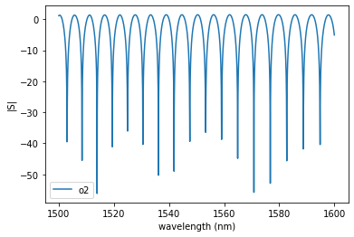
[27]:
<AxesSubplot:xlabel='wavelength (nm)', ylabel='|S|'>
Lets add grating couplers to the mzi circuit.
[28]:
mzi_layout = gf.components.mzi(delta_length=100)
mzi_with_gc_layout = gf.routing.add_fiber_single(
component=mzi_layout, with_loopback=False
)
mzi_with_gc_layout
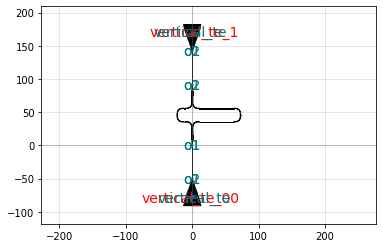
[28]:
mzi_delta_length100_mov_1c54ec7f: uid 29, ports ['vertical_te_00', 'vertical_te_1'], aliases [], 0 polygons, 5 references
[29]:
c = gc.gc1550te()
gs.plot_model(c, pin_in="port 1")

[29]:
<AxesSubplot:xlabel='wavelength (nm)', ylabel='|S (dB)|'>
MZI intereferometer from layout#
[30]:
import gdsfactory as gf
import gdsfactory.simulation.simphony as gs
import gdsfactory.simulation.simphony.components as gc
from simphony.libraries import siepic
c = gf.components.mzi(delta_length=10)
c

[30]:
mzi_delta_length10: uid 21, ports ['o1', 'o2'], aliases [], 0 polygons, 20 references
[31]:
cm = gs.component_to_circuit(c)
gs.plot_circuit(cm)
2022-06-30 06:17:18.468 | INFO | gdsfactory.simulation.lumerical.read:read_sparameters_lumerical:130 - Sparameters loaded from /home/runner/work/gdsfactory/gdsfactory/gdslib/sp/mmi1x2_eaca167b.dat
2022-06-30 06:17:18.487 | INFO | gdsfactory.simulation.lumerical.read:read_sparameters_lumerical:130 - Sparameters loaded from /home/runner/work/gdsfactory/gdsfactory/gdslib/sp/mmi1x2_eaca167b.dat
2022-06-30 06:17:18.505 | INFO | gdsfactory.simulation.simphony.components.straight:straight:23 - ignoring dict_keys(['cross_section'])
2022-06-30 06:17:18.506 | INFO | gdsfactory.simulation.simphony.components.straight:straight:23 - ignoring dict_keys(['cross_section'])
2022-06-30 06:17:18.508 | INFO | gdsfactory.simulation.simphony.components.straight:straight:23 - ignoring dict_keys(['cross_section'])
2022-06-30 06:17:18.510 | INFO | gdsfactory.simulation.simphony.components.straight:straight:23 - ignoring dict_keys(['cross_section'])
2022-06-30 06:17:18.511 | INFO | gdsfactory.simulation.simphony.components.straight:straight:23 - ignoring dict_keys(['cross_section'])
2022-06-30 06:17:18.513 | INFO | gdsfactory.simulation.simphony.components.straight:straight:23 - ignoring dict_keys(['cross_section'])
2022-06-30 06:17:18.515 | INFO | gdsfactory.simulation.simphony.components.straight:straight:23 - ignoring dict_keys([])
2022-06-30 06:17:18.516 | INFO | gdsfactory.simulation.simphony.components.straight:straight:23 - ignoring dict_keys([])
2022-06-30 06:17:18.517 | INFO | gdsfactory.simulation.simphony.components.straight:straight:23 - ignoring dict_keys([])
2022-06-30 06:17:18.519 | INFO | gdsfactory.simulation.simphony.components.straight:straight:23 - ignoring dict_keys([])
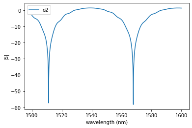
[31]:
<AxesSubplot:xlabel='wavelength (nm)', ylabel='|S|'>
[32]:
c = gf.components.mzi(
delta_length=20
) # Double the delta length should reduce FSR by half
cm = gs.component_to_circuit(c)
2022-06-30 06:17:39.775 | INFO | gdsfactory.simulation.lumerical.read:read_sparameters_lumerical:130 - Sparameters loaded from /home/runner/work/gdsfactory/gdsfactory/gdslib/sp/mmi1x2_eaca167b.dat
2022-06-30 06:17:39.793 | INFO | gdsfactory.simulation.lumerical.read:read_sparameters_lumerical:130 - Sparameters loaded from /home/runner/work/gdsfactory/gdsfactory/gdslib/sp/mmi1x2_eaca167b.dat
2022-06-30 06:17:39.810 | INFO | gdsfactory.simulation.simphony.components.straight:straight:23 - ignoring dict_keys(['cross_section'])
2022-06-30 06:17:39.811 | INFO | gdsfactory.simulation.simphony.components.straight:straight:23 - ignoring dict_keys(['cross_section'])
2022-06-30 06:17:39.814 | INFO | gdsfactory.simulation.simphony.components.straight:straight:23 - ignoring dict_keys(['cross_section'])
2022-06-30 06:17:39.814 | INFO | gdsfactory.simulation.simphony.components.straight:straight:23 - ignoring dict_keys(['cross_section'])
2022-06-30 06:17:39.816 | INFO | gdsfactory.simulation.simphony.components.straight:straight:23 - ignoring dict_keys(['cross_section'])
2022-06-30 06:17:39.817 | INFO | gdsfactory.simulation.simphony.components.straight:straight:23 - ignoring dict_keys(['cross_section'])
2022-06-30 06:17:39.819 | INFO | gdsfactory.simulation.simphony.components.straight:straight:23 - ignoring dict_keys([])
2022-06-30 06:17:39.820 | INFO | gdsfactory.simulation.simphony.components.straight:straight:23 - ignoring dict_keys([])
2022-06-30 06:17:39.821 | INFO | gdsfactory.simulation.simphony.components.straight:straight:23 - ignoring dict_keys([])
2022-06-30 06:17:39.822 | INFO | gdsfactory.simulation.simphony.components.straight:straight:23 - ignoring dict_keys([])
[33]:
gs.plot_circuit(cm)
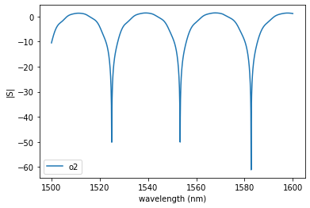
[33]:
<AxesSubplot:xlabel='wavelength (nm)', ylabel='|S|'>
Ring resonator#
[34]:
c = gf.components.ring_double(radius=5)
c
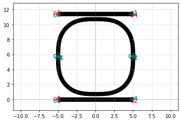
[34]:
ring_double_radius5: uid 52, ports ['o1', 'o2', 'o3', 'o4'], aliases [], 0 polygons, 4 references
[35]:
c = gc.ring_double(radius=5)
gs.plot_circuit(c, pins_out=["o2", "o3", "o4"])
2022-06-30 06:18:01.116 | INFO | gdsfactory.simulation.simphony.components.straight:straight:23 - ignoring dict_keys([])
2022-06-30 06:18:01.118 | INFO | gdsfactory.simulation.simphony.components.straight:straight:23 - ignoring dict_keys([])
/home/runner/work/gdsfactory/gdsfactory/gdsfactory/simulation/simphony/plot_circuit.py:54: RuntimeWarning: divide by zero encountered in log10
y = 10 * np.log10(y) if logscale else y
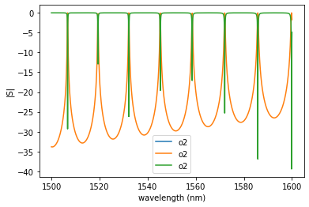
[35]:
<AxesSubplot:xlabel='wavelength (nm)', ylabel='|S|'>
[36]:
c = gf.components.ring_double(radius=10) # double radius, reduces FSR by half.
c
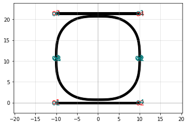
[36]:
ring_double_radius10: uid 58, ports ['o1', 'o2', 'o3', 'o4'], aliases [], 0 polygons, 4 references
[37]:
c = gs.components.ring_double(radius=10)
gs.plot_circuit(c, pins_out=["o2", "o3", "o4"])
2022-06-30 06:18:33.012 | INFO | gdsfactory.simulation.simphony.components.straight:straight:23 - ignoring dict_keys([])
2022-06-30 06:18:33.014 | INFO | gdsfactory.simulation.simphony.components.straight:straight:23 - ignoring dict_keys([])
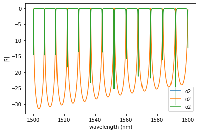
[37]:
<AxesSubplot:xlabel='wavelength (nm)', ylabel='|S|'>